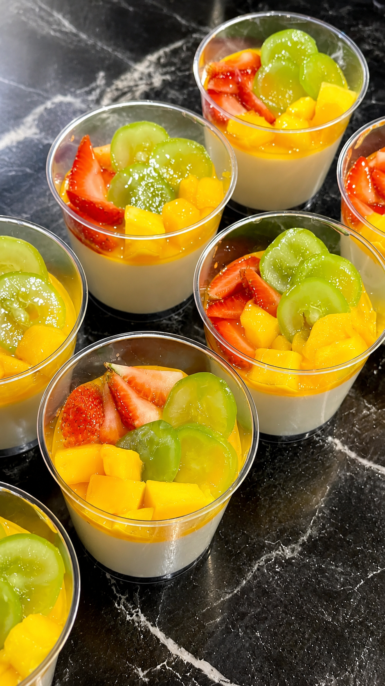
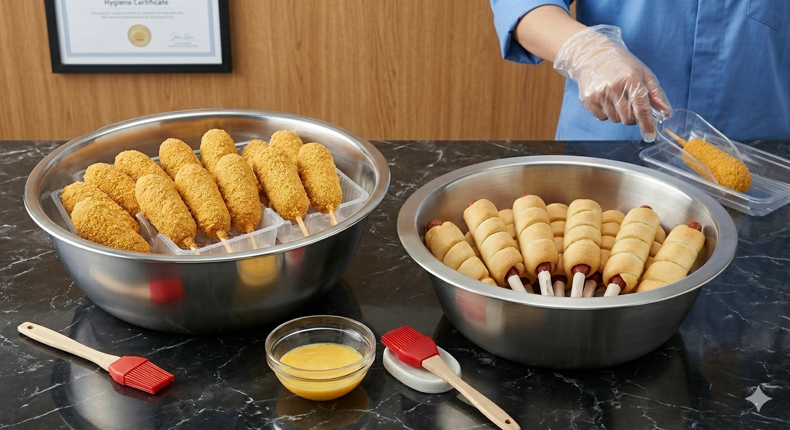
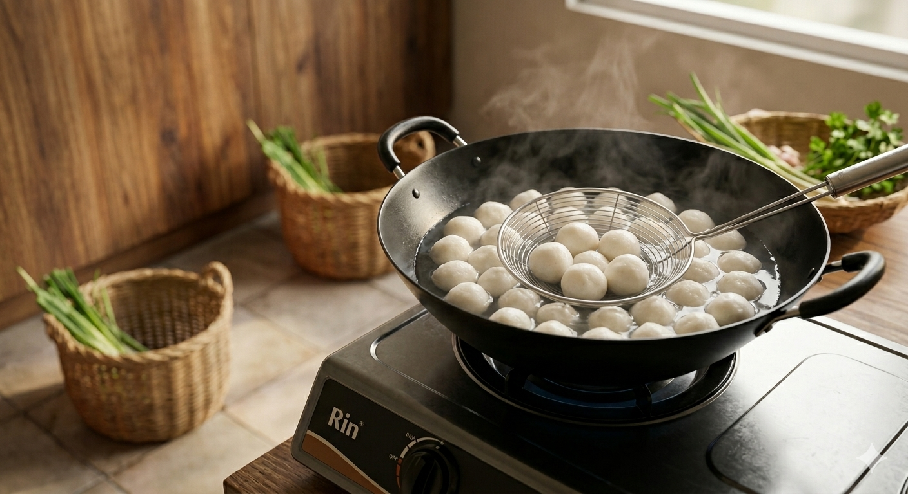
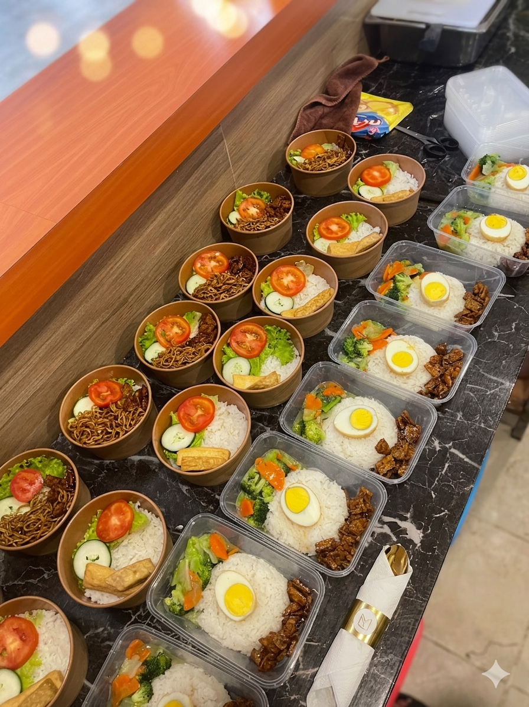
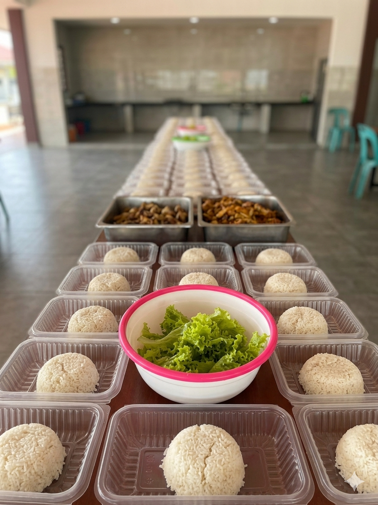
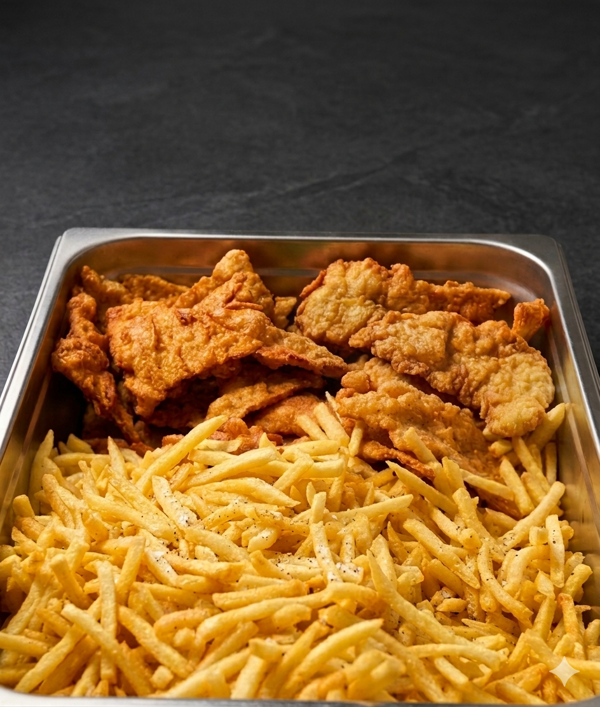

Uvers Canteen • Batam
Lokasi Strategis
Di dalam area kampus Universitas Universal
Variasi Makanan
Berbagai variasi makanan vegetarian yang siap dinikmati
Sunflower — Brightening Every Campus Meal
Sunflower menghadirkan makanan dan minuman untuk menemani aktivitas kampus dengan suasana yang hangat, nyaman, dan bersahabat bagi mahasiswa maupun pengunjung.

Fresh, bright, and campus-ready
Pilihan menu Sunflower tampil hangat, ringan, dan cocok untuk gaya hidup vegetarian modern di lingkungan kampus.
Student-friendly
Harga terjangkau untuk kebutuhan harian kampus
Campus Food Experience
Pilihan makanan dan minuman untuk menemani aktivitas harian kampus.
Tagline
Fuel Your Campus Life
Lokasi
Universitas Universal, Kawasan Pasir Putih, Batam
Tentang Sunflower
Pengalaman makanan vegetarian variatif yang menemani aktivitas kampusmu
Sunflower hadir sebagai bagian dari kehidupan kampus di Universitas Universal Pasir Putih, bukan hanya untuk menyediakan makanan dan minuman, tetapi juga menghadirkan suasana hangat, nyaman, dan penuh kebersamaan. Berawal dari semangat tim, keluarga, dan komunitas, Sunflower menjadi tempat untuk berbagi cerita, membangun koneksi, dan menikmati momen sederhana di tengah aktivitas kampus.
Bagi Sunflower, makanan bukan sekadar kebutuhan. Ini adalah cara untuk menghadirkan kenyamanan, mempererat hubungan, dan memberikan energi positif bagi mahasiswa maupun pengunjung setiap harinya.
Mendukung aktivitas kampus setiap hari
Cocok untuk menemani malam harimu, makan sore praktis, diskusi ringan, maupun menikmati waktu santai setelah kelas.
Suasana hangat untuk aktivitas kampus
Dengan suasana yang ramah dan lokasi strategis, Sunflower menjadi pilihan yang relevan untuk keseharian kampus.
Why Choose Us
Kenapa Sunflower jadi pilihan yang pas untuk lingkungan kampus
Sunflower menghadirkan berbagai pilihan makanan vegetarian untuk mahasiswa maupun pengunjung yang mencari makanan praktis, nyaman, dan cocok dinikmati di tengah aktivitas kampus.
01
Makanan dan minuman terjangkau
Menu yang ramah di kantong tanpa mengurangi rasa nyaman saat menikmati momen di kampus.
02
Pilihan menu yang lebih variatif
Dengan variasi menu harian yang berbeda, Sunflower menghadirkan pengalaman makan yang tidak monoton di lingkungan kampus.
03
Pelayanan ramah
Interaksi yang bersahabat membantu menciptakan pengalaman yang menyenangkan setiap hari.
04
Lokasi strategis
Berada di dalam kawasan kampus sehingga mudah dijangkau saat jadwal sedang padat.
05
Praktis untuk aktivitas harian
Cocok untuk mahasiswa yang ingin menikmati makanan dengan cepat, nyaman, dan tidak ribet di tengah kesibukan kampus.
06
Rasa yang bisa dinikmati semua orang
Menu vegetarian yang bervariasi di Sunflower dirancang dengan cita rasa yang unik dan tetap cocok dinikmati, bahkan bagi nonvegetarian.
Services & Experience
Lebih dari sekadar menikmati makanan, ini adalah pengalaman kampus yang hidup
Pengalaman makanan dan minuman yang modern
Sunflower menyajikan pilihan yang cocok untuk kebutuhan cepat maupun momen santai di tengah aktivitas kuliah.
Pengalaman vegetarian yang lebih menyenangkann
Sunflower menghadirkan pilihan vegetarian yang tetap lezat, praktis, dan nyaman dinikmati di tengah aktivitas kampus.
Lingkungan sosial yang dekat dengan keseharian kampus
Sunflower menjadi ruang kecil yang mempertemukan energi, percakapan, dan kebersamaan di area universitas.
Layanan praktis dengan nuansa profesional
Pengalaman makan yang efisien dan modern membantu pengunjung tetap produktif tanpa kehilangan kenyamanan.
Galeri
Galeri proses pembuatan hingga makanan siap disajikan
Dokumentasi ini menampilkan tahapan proses pembuatan di Sunflower, mulai dari persiapan bahan hingga hasil yang siap dinikmati.





FAQ
Pertanyaan yang sering ditanyakan
Informasi singkat ini membantu pengunjung memahami layanan Sunflower dengan cepat dan nyaman.
Jam operasional Sunflower mengikuti aktivitas dan hari operasional kampus untuk menyesuaikan kebutuhan mahasiswa maupun pengunjung.
Sunflower menyediakan berbagai pilihan makanan vegetarian, minuman, dessert untuk menemani aktivitas kampus, mulai dari kebutuhan cepat hingga momen santai bersama teman.
Sunflower menyediakan metode pembayaran tunai dan QR Code untuk memudahkan transaksi mahasiswa maupun pengunjung.
Sunflower berlokasi di Kampus Universitas Universal, Kawasan Pasir Putih, Kepulauan Riau, Batam
Tidak. Sunflower terbuka untuk mahasiswa maupun pengunjung di lingkungan Universitas Universal.
Kontak
Terhubung dengan Sunflower lebih mudah
Kunjungi, hubungi, atau simpan informasi kami untuk kebutuhan kunjungan, kolaborasi, maupun pertanyaan seputar layanan.
Campus Map
Email
youthteamsunflower@gmail.com
Telepon
081275676528
Alamat
Universitas Universal, Kawasan Pasir Putih, Batam